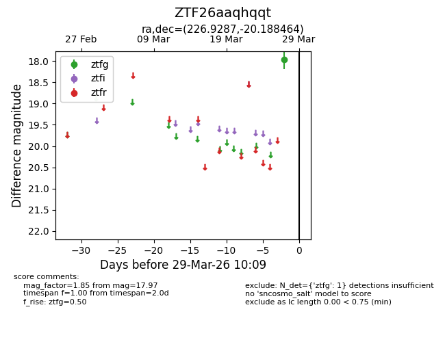
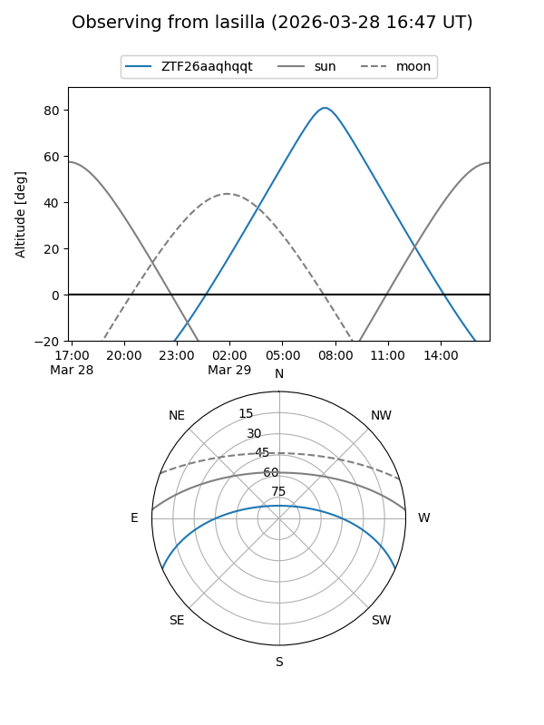
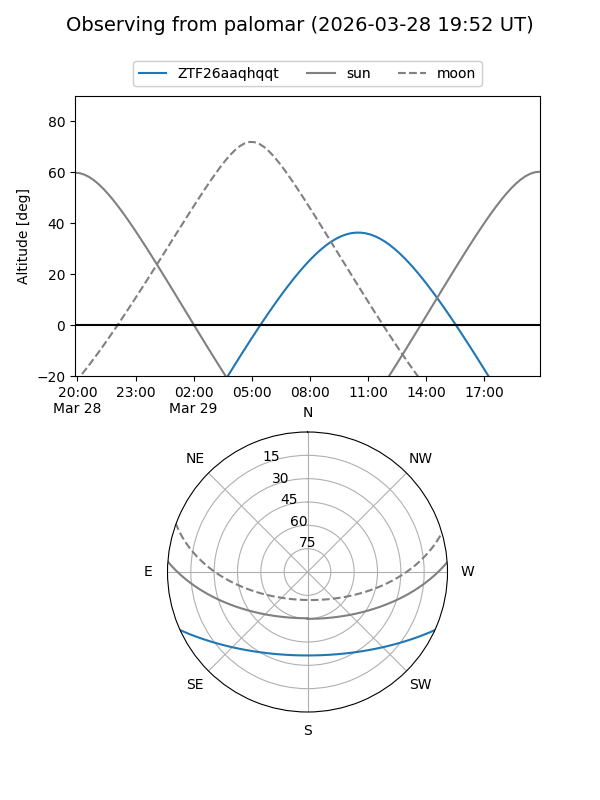

ZTF26aaqhqqt
Target ZTF26aaqhqqt at 2026-03-29 10:12
Aliases and brokers:
FINK: link
Lasair: link
ALeRCE: link
alt names
ZTF26aaqhqqt (ztf,fink_ztf)
Coordinates:
equatorial (ra, dec) = 226.9287,-20.18846
equatorial (HMS+DMS) = 15:07:42.88,-20:11:18.47
galactic (l, b) = (341.4039,+32.31502)
Flags:
Photometry:
last ztfg=17.97
1 ztfg detections
Lightcurve

Visibility


Additional plots